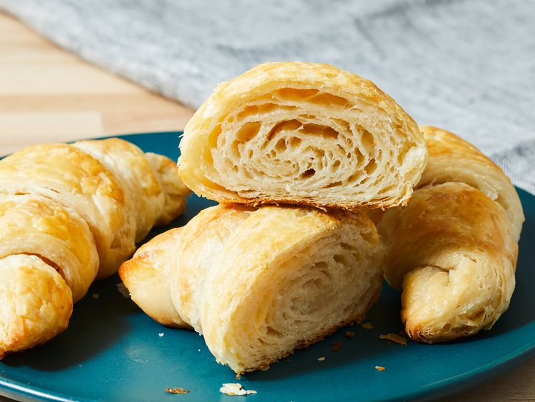

Croissant

What is a Croissant?
A croissant, is a Viennoiserie in a crescent shape made from a laminated yeast dough that sits between a bread and a puff pastry
It is buttery and flaky, inspired by the shape of the Austrian kipferl, but using the Viennoiserie yeast-leavened laminated dough.Croissants are named for their crescent shape.
The dough is layered with butter, rolled and folded several times in succession, then rolled into a thin sheet, in a technique called laminating.
The process results in a layered, flaky texture, similar to a puff pastry.
Ingredients:
- 3 tablespoons warm water (110 degrees F/45 degrees C)
- 1 ¼ teaspoons active dry yeast
- 1 teaspoon white sugar
- 1 ¾ cups all-purpose flour
- ⅔ cup warm milk
- 2 teaspoons white sugar
- 1 ½ teaspoons salt
- 2 tablespoons vegetable oil
- ⅔ cup unsalted butter, chilled
- 1 large egg
- 1 tablespoon water
Steps:
- Combine warm water, yeast, and 1 teaspoon sugar in a small bowl. Let stand until yeast softens and begins to form a creamy foam, about 5 minutes.
- Measure flour into a mixing bowl. Combine warm milk, 2 teaspoons sugar, and salt in a separate bowl; blend milk mixture, yeast mixture, and oil into flour. Mix well and knead until smooth. Cover, and let rise until over tripled in volume, about 3 hours.
- Deflate gently, and let rise again until doubled, about another 3 hours.
- Deflate dough and chill for 20 minutes.
- Massage butter until pliable, but not soft and oily. Pat dough into a 14x8-inch rectangle.
- Smear butter over top two-thirds, leaving a ¼-inch margin all around. Fold unbuttered third over middle third, and buttered top third down over that.
- Turn 90 degrees, so that folds are to left and right. Roll out to a 14x6-inch rectangle. Fold in three again. Sprinkle lightly with flour, and put dough in a resealable plastic bag. Refrigerate for 2 hours.
- Unwrap, sprinkle with flour, and deflate gently. Roll to a 14x6-inch rectangle, and fold again. Turn 90 degrees, and repeat. Wrap and chill 2 hours.
- Preheat the oven to 475 degrees F (245 degrees C).
- To shape, roll dough out to a 20x5-inch rectangle. Cut in half crosswise, and chill half while shaping the other half. Roll out to a 15x5-inch rectangle. Cut into three 5x5-inch squares. Cut each square in half diagonally.
- Roll each triangle lightly to elongate the point, and make it 7 inches long. Grab the other 2 points, and stretch them out slightly as you roll it up.
- Place on a baking sheet, curving slightly. Let shaped croissants rise until puffy and light.
- In a small bowl, beat together egg and 1 tablespoon water. Glaze croissants with egg wash.
- Bake in the preheated oven until crisp, flaky, and golden brown, about 12 to 15 minutes.
Home